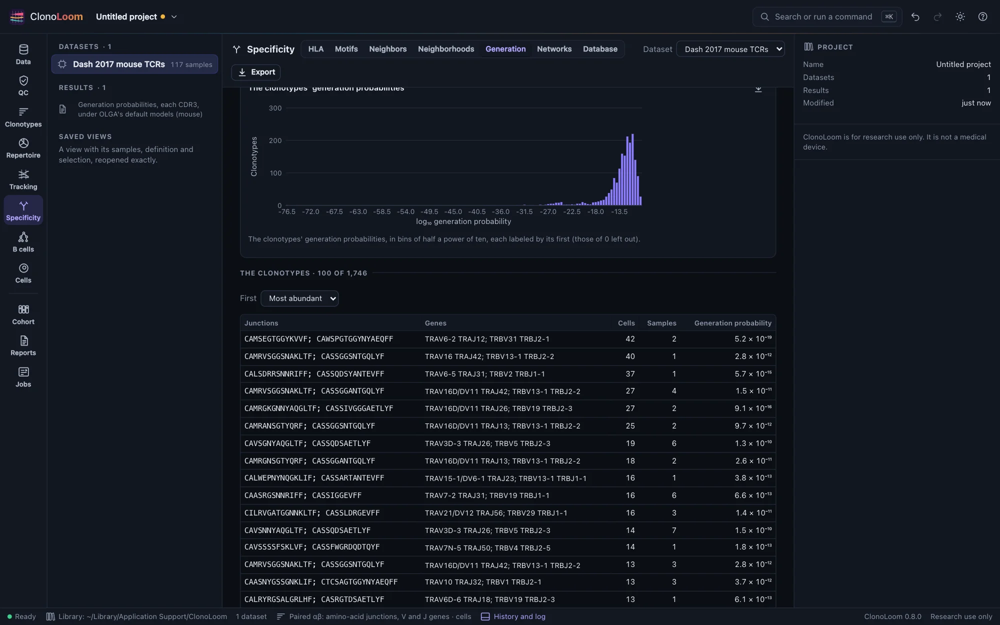
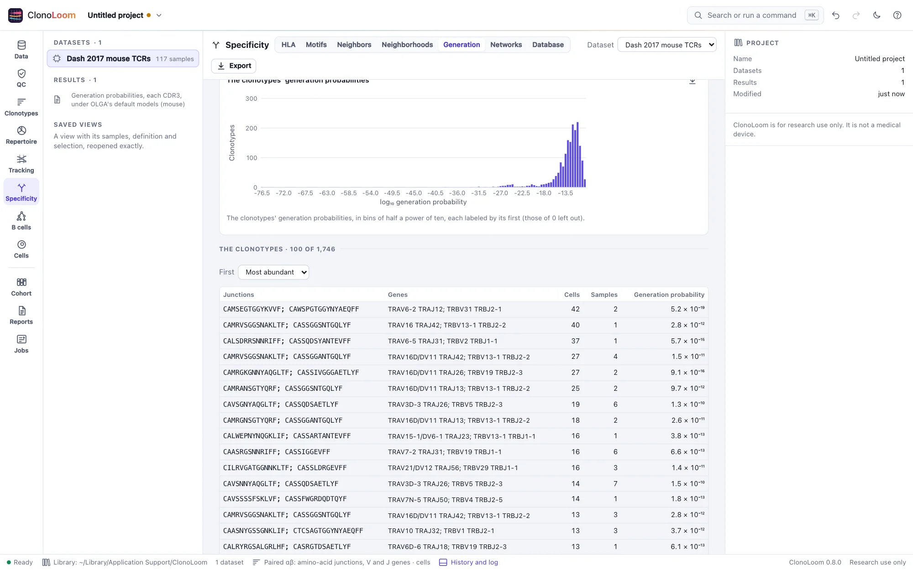

Generation probabilities
The Specificity view's Generation part computes each clonotype's generation probability, the probability that recombination alone makes its CDR3s. Receptors recombination makes often are found in many people by chance; the probability says how a receptor is made, not what it recognizes.
Each clonotype's probability


Open T- or B-cell receptors, define clonotypes by junction (Clonotypes), and open Specificity › Generation. Compute the probabilities computes each clonotype's, as a job, and keeps the result with the project:
- By sample: each sample's clonotypes' probabilities, their median and middle half, on a logarithmic scale.
- The distribution of the clonotypes' probabilities, in bins of half a power of ten.
- The clonotypes, the most abundant, most probable or least probable first, each with its probability. Choose one to see it in the Clonotypes view.
The Clonotypes view's inspector shows the probability of the clonotype chosen, and each chain's, under the same choices.
The probability
A recombination model gives the probability of each event that makes a chain: its V, D and J genes, how many nucleotides each gene end loses or gains as a palindrome, and the nucleotides inserted between them. A CDR3's generation probability (Sethna et al. 2019) sums the probabilities of every event that makes it, the junction from the conserved cysteine to the phenylalanine or tryptophan, both included:
- a clonotype defined by amino-acid junction has its amino acids' probability, every codon of each counted; by nucleotide junction, its nucleotides';
- With the V and J genes, it is the probability of the CDR3 with the genes the clonotype names, not of the CDR3 alone (a gene named without its allele stands for each of its alleles). A definition by V family, or without genes, computes the CDR3 alone;
- a pair's probability is the product of its chains': recombination makes them independently;
- a CDR3 the model cannot make has a probability of 0, and is counted apart from the distribution.
ClonoLoom computes it as OLGA does, by dynamic programming over the CDR3's codons, its choices included: every insertion length the model allows, a palindrome made from the gene's part of the CDR3, and only the genes OLGA uses (those its anchor files mark functional).
The models
- OLGA's default models, inferred by IGoR (Marcou et al. 2018) from unproductive rearrangements: human TRA, TRB, IGH, IGK and IGL, and mouse TRA and TRB. ClonoLoom downloads them once, when you ask (Reference data; 28 files, 2.2 MB, from OLGA's repository), checks each against its recorded SHA-256, and names their checksum in every result.
- ClonoLoom's own model of human TRB, built in: the model its simulator draws rearrangements from (GRCh38's gene segments, 10x Genomics' V and J usage). It is used until OLGA's are downloaded, or when you choose it.
The organism is the one whose models name the most of the dataset's V genes, unless you choose it. A chain whose locus has no model (TRG or TRD, or anything but TRB under ClonoLoom's model), or whose genes the model lacks when the genes are part of the probability, has none, and the result counts why; a pair has one only when each chain has one.
How it is checked
Under OLGA's seven models, the probabilities of 99,949 CDR3s (the development data's T- and B-cell chains, CDR3s OLGA draws from each model, nucleotide junctions, CDR3s with their genes, and CDR3s with residues of any amino acid) are within a relative 10−9 of OLGA 1.3.0's (in fact within 3 × 10−15). In one place ClonoLoom counts events OLGA leaves out: an insertion of the longest length a model allows, when that length is one more than a multiple of three and the insertion starts a codon. Of the seven models, it changes mouse TRA's (whose insertions reach 22 nucleotides) by more than a relative 10−15: by up to 13% of a probability among the 5,583 mouse TRA CDR3s compared. OLGA's own generator makes these receptors. Under ClonoLoom's model, the probabilities agree with how often its simulator makes each of 200 junctions in 20 million rearrangements, and its generator with the probabilities, under its own model and OLGA's human TRB model.
Using the result
Both plots save as figures. Export writes each clonotype's probability, and each chain's, and each sample's quartiles, as CSV. The methods paragraph names the models by their checksum. Scripts use measure_generation (Remote control). A million TRB CDR3s take about 30 seconds on ten processors.